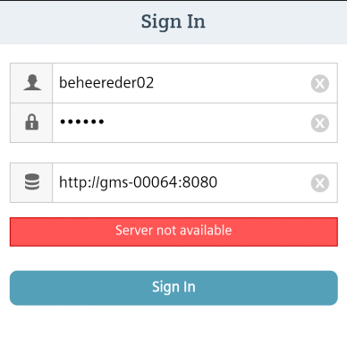
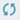
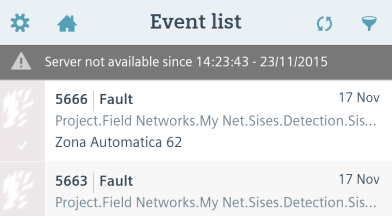

Mobile App Server Not Available
When you sign into the app, or when you are working in the app, you may encounter a Server not available message. This means the app cannot connect to the Desigo CC server, or that it has lost its connection to the server.
Server Not Available on Signing In
If you cannot sign in at all, check the following:
- Make sure the device has the required network connection (Wi-Fi or 3G/4G). See, Check Device Network Connections.
- Check that the server URL you entered in the sign-in screen is correct. See, Obtain the Server URL and Check the Server URL using a Browser.
- Check with your system administrator that the the Desigo CC server is running and correctly configured to work with the app.

Server Not Available While Using the App
For as long as you remain signed in, the Desigo CC app regularly (at 2-minute intervals) checks its connection to the Desigo CC server.
If the connection to the server is lost for any reason (for example, because the device temporarily moves out of range of the Wi-Fi signal), the app informs you in one of two ways:
- With a gray
Server not availablebar along the top, if the app is open in the foreground. - With a notification in the notification area of the device, if the app is in the background.
If this happens:
- Check the device internet or intranet connection, and move back into range of Wi-Fi or 3G/4G, if necessary.
- Check with your system administrator that the server is up and running. You can also check the connection to the Web Service using a browser on the mobile device.
When it detects that the connection to the server is lost, the app will either automatically retry connecting to the server at preset intervals (this is the default behavior) or wait for you to manually try to reconnect, depending on what you configured in the Server Connection Preferences.
If the connection to the server is not reinstated within 10 minutes, you will be logged out.
Manually Try to Reconnect
- If the app is open in the foreground, tap the gray
server not availablebar, or tap the refresh icon
. - If the app is in the background, resume the app. This will cause it to automatically try to reconnect.
- If the reconnection is successful, the gray bar disappears.
